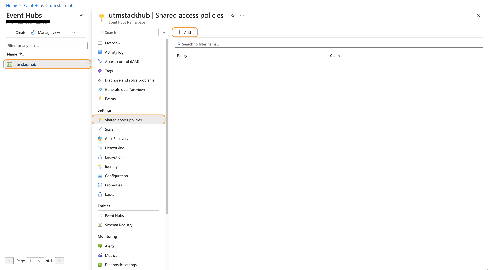
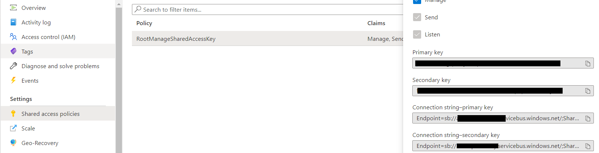
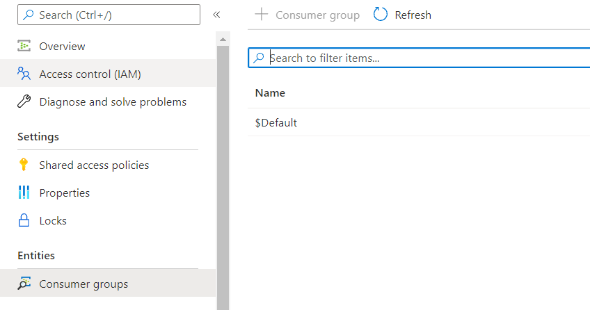
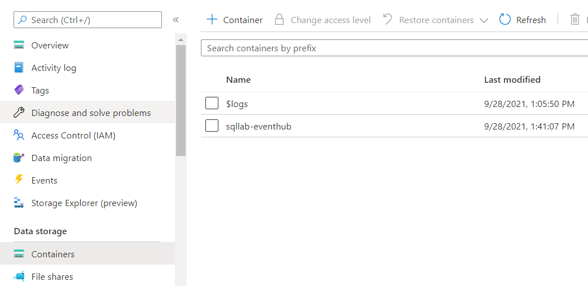
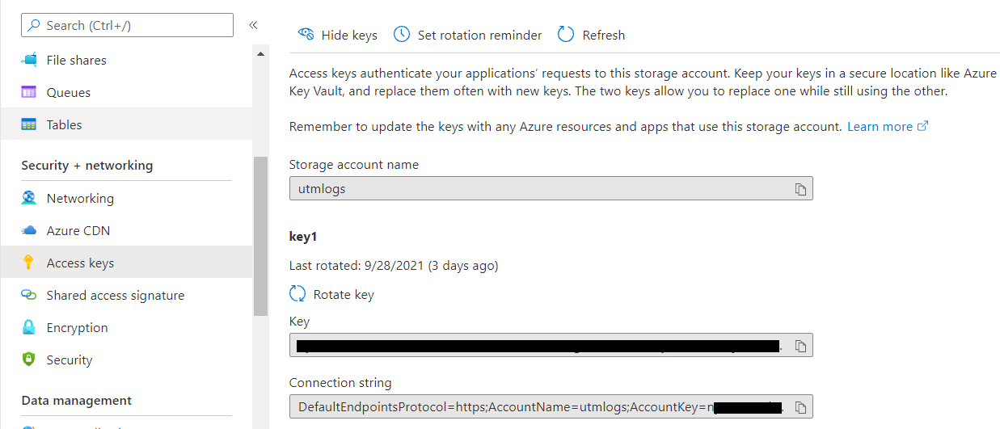
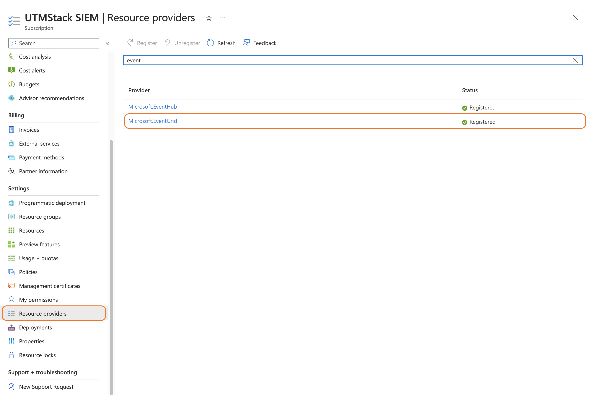
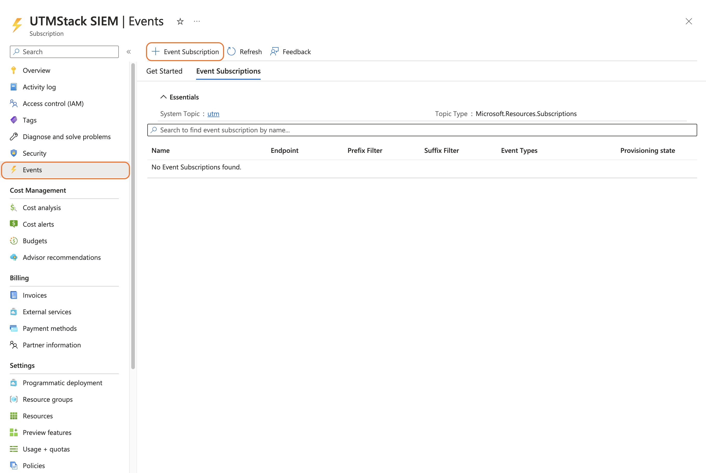
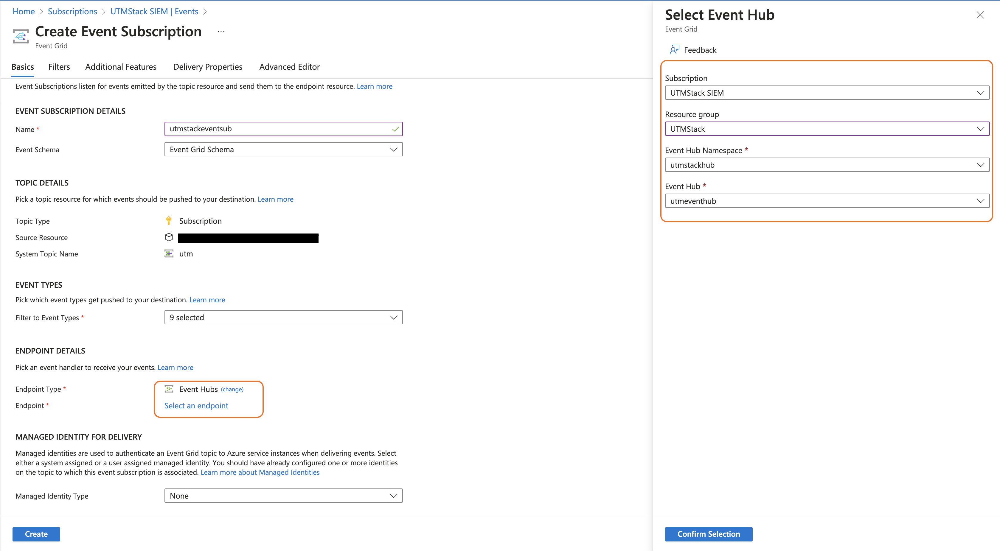

1 Create "Event Hub", using the official Azure documentation Quickstart: Create an event hub using Azure portal
2 Create a new "Shared access policy" to allow access to the Event Hub created, make sure you select the "Listen" permission.
3 Get the Event Hub Shared Access policies - Connection string–primary key from "Shared access policy" created previously. It will be used to configure your tenant.
4 Get the Consumer Group Name in: All services-> Event Hubs -> Your_Event_Hub_Namespace -> Event Hubs -> Your_Event_Hub_Instance -> Consumer groups. It will be used to configure your tenant.
5 Create a "Storage Account" using the official Azure documentation Quickstart: Create a storage account
6 Get the "Storage Container Name" in: All services -> Storage accounts -> Your_Storage_Account -> Containers. It will be used to configure your tenant.
7 Get the Storage Account Connection string with key to access Azure "Storage Account". Find the connection string here: All services -> Storage accounts -> Your_Storage_Account -> Access keys. It will be used to configure your tenant.
8 Configure your Azure Subscription to send log to the Event Hub. Go to Subscription and click on "Resource providers". Search for "Event Grid", and make sure is registered in the "Resources providers".
9 Create a new Event by clicking in the Events -> Event Subscription
10 Configure the "Event Subscription" to send logs to the Event Hub created previously.
11 Use the data collected in the previous steps to fill the form as documented below. You can add more than one Event Hub configuration by clicking on the Add tenant button.
12 Click on the button shown below, to activate the UTMStack features related to this integration